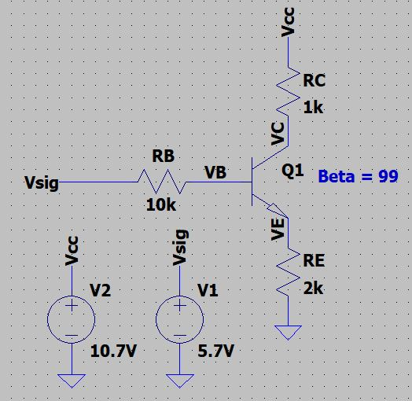
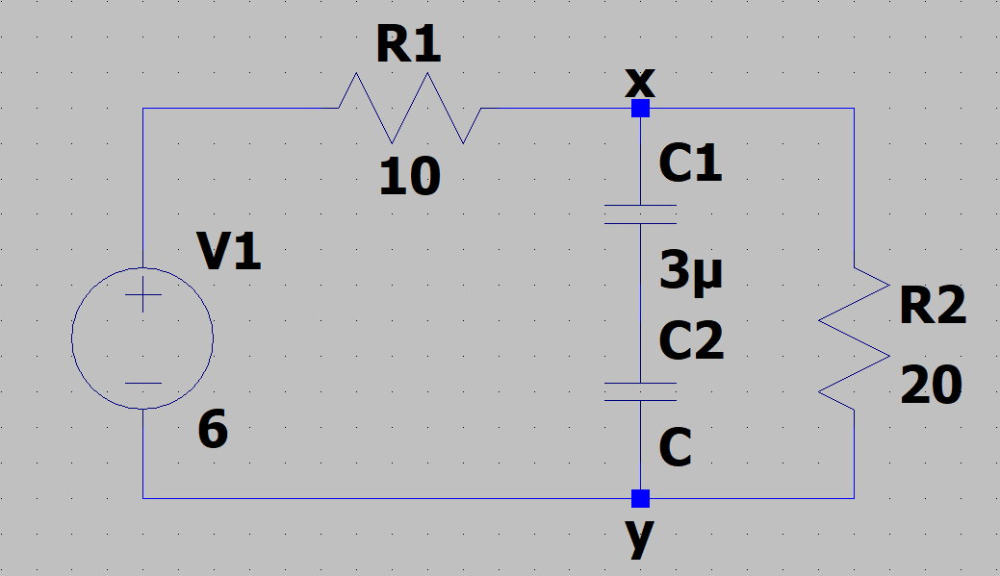
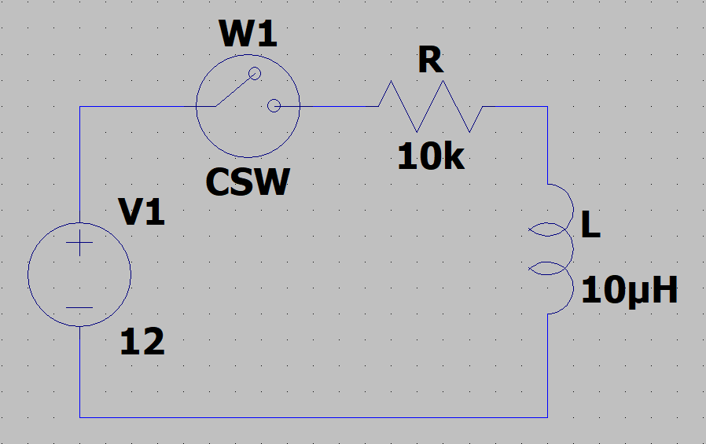
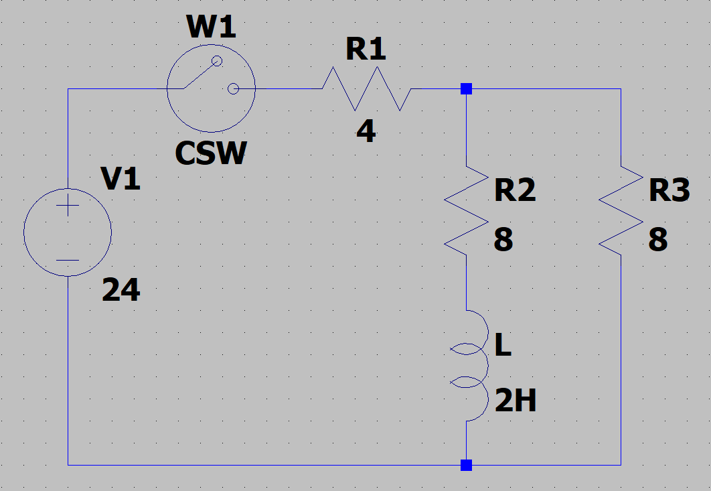
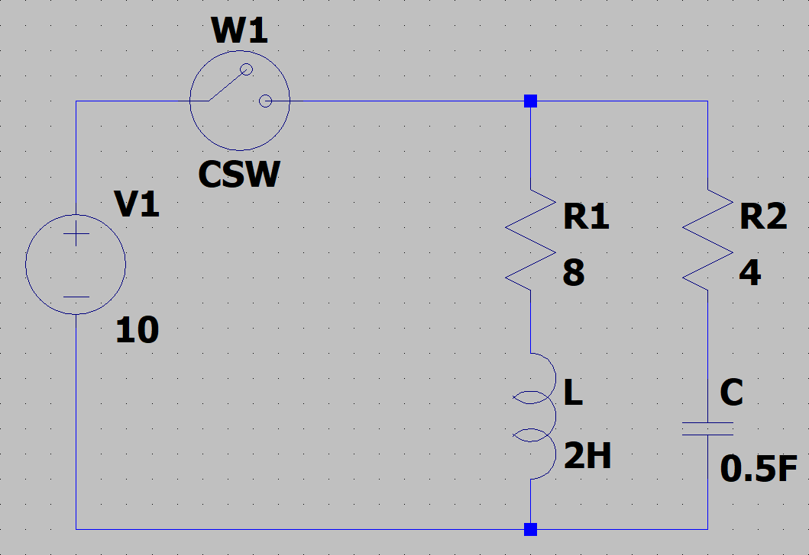

Interview Anwsers
Basic Questions
-
What is the Equation of a Voltage Divider?
-
What is the definition of Capacitance?
-
How does a FPGA differ from a Microprocessor?
-
How do ADC's work?
-
What is the point of impedance matching?
-
How does a BJT work?
-
How does a MOSFET work?
-
How does an H-Bridge work?
Boolean Alegbra
Simplifiy The Boolean Expression
Digital Logic
SR Latch
BJTs
-
Determine \(I_C\), \(I_B\), \(I_E\) and \(V_C\), \(V_B\), \(V_E\)  Assuming the BJT is in Active Mode, \(V_{BE} = 0.7(v)\)
Taking KVL from B-E
Take KVL from C-E
Check that Assumption of Operating Mode is correct
-
Determine \(I_C\) and \(V_C\)
Op-Amp
- What does Op-Amp stand for?
RC Circuits
Example 1
Sketch the output given the input for the two circuits.
SPICE Sim R//C//R -> Click to Download
SPICE Sim C//R//C -> Click to Download
Example 2
Given the circuit starts open, when SW1 closes. What is the voltage accross C1 and C2?

C1 will reach the same voltage as the input voltage after it has been completley charged. This time can be determined through the use of the equation \(V = Vo \cdot{} e^{-t/(RC)}\) where \(t\) is determined. Since C2 is not connected to the voltage source, it remains at 0V.
Now, SW1 opens and SW2 closes. What is the voltage across C1 and C2 given SW1 has been closed for a long time?
When SW2 is closed, the voltage on C1 is equal to 5V and the voltage on C2 is 0V. Because of the potential difference, current will flow from C1 to C2 until the potential difference is 0. To determine the final voltage, the total capacitance should be considered.
Given C1 is charged, we know the total charge on C1 is \(Q_1 = C_1 \cdot{} \Delta{}V_1\) In order to conserve charge, \(Q_{eff}\) must equal \(Q_1\). The amount of charge cannot change.
Therefore, the voltage on C1 and C2 will be equal at some value less than 5V.
Example 3
When SW1 closes what is Vout?

Convservation of Charge
The current through C2 is the same going through C1. So the charge on \(q_1 = q_2\).
The definition of the total charge on a capacitor is \(q = c \cdot{} \Delta{}v\)
Example 4
For the given circuit

-
Right after the switch is closed (t=0)
-
What is the charge on the cap
None, so Q = 0C
-
Voltage across the cap
V = 0. There is no charge but there is current
-
Current across the resistor
-
Voltage across the resistor
Vr = 9V
-
-
Now, when the switch is opened
-
What is the charge on the cap
\(Vc = 9V\). So since \(V=\dfrac{Q}{C}\). Therefore \(Q=27\mu{}C\)
-
Voltage across the cap
\(Vc = 9V\). 3. Current across the resistor
\(I = 0\) since there is no potential difference, \(\Delta{}V\)
-
Voltage across the resistor
\(V = 0\)
-
Example 5
For the given circuit find...

-
Total Capacitance
\(C_T = \dfrac{1}{C_1} + \dfrac{1}{C_2} = 4\mu{}F\)
-
Current through the 10\(\Omega\) resistor
\(V=IR, \dfrac{V}{R} = I = dfrac{6}{10} = 0.6(A) = I_T\) \(\dfrac{V_{10}}{R_{10}} = I_{10} = \dfrac{2}{10} = 0.2(A)\)
-
Voltage across X and Y points
V_X - V_Y = V_{R20} - 0 = 4(V)
-
Charge on 6\(\mu{}F\) cap
Charge Sharing: Charge is the same across series capacitors. \(Q_6 = Q_{12} = Q_T\)
-
Voltage across each cap
RL Circuits
Example 1
For the given circuit find...

- When the switch is closed after being open for some time.
- Current through the circuit \(I = 0\)
- Voltage across the resistor \(V_R = 0\)
- Voltage across the inductor \(V_L = 12V\)
- After being closed for a long period of time...
- Current through the circuit \(I = V/R = \dfrac{12V}{10k} = 1.2mA\)
- Voltage across the resistor \(V_R = 12V\)
- Voltage across the inductor \(V_L = 0V\)
Example 2
For the given circuit find...

- When the switch is closed after being open for some time.
- Current through the circuit \(I = 0\)
- Voltage across the inductor \(V_L = 24V\)
- Voltage across the 5\(\Omega\) Resistor \(V_5 = 0\)
- Voltage across the 3\(\Omega\) Resistor \(V_3 = 0\)
- After being closed for a long period of time...
- Current through the circuit \(I = V/R = 24V/(5+3) = 3A\)
- Voltage across the inductor \(V_L = 0\)
- Voltage across the 5\(\Omega\) Resistor \(V_5 = IR = (3)(5) = 15V\)
- Voltage across the 3\(\Omega\) Resistor \(V_3 = IR = (3)(3) = 9V\)
Example 3
For the given circuit find...

- When the switch is closed after being open for some time.
- Current through the inductor \(I_L = 0A\)
- Current through the circuit \(I = V/R = \dfrac{24}{12} = 2A\)
- Current through the 4\(\Omega\) resistor \(I_4 = 2A\)
- Current through the 8\(\Omega\) resistors \(I_8 = 2A\)
- Voltage across the inductor \(V_L = 16V\)
- Voltage across the 8\(\Omega\) resistors \(V_8 = IR = (2)(8) = 16V\)
- Voltage across the 4\(\Omega\) resistor \(V_4 = IR = (2)(4) = 8V\)
- After being closed for a long period of time...
- Current through the inductor \(I_L = 1.5A\)
- Current through the circuit \(I = V/R = \dfrac{24}{(4+(8//8)} = 3A\)
- Current through the 4\(\Omega\) resistor \(I_4 = 3A\)
- Current through the 8\(\Omega\) resistors \(I_8 = 1.5A\)
- Voltage across the inductor \(V_L = 0V\)
- Voltage across the 8\(\Omega\) resistors \(V_8 = 12V\)
- Voltage across the 4\(\Omega\) resistor \(V_4 = IR = (3)(4) = 12V\)
- The switch is now opened
- Current through the inductor \(I_L = -1.5A\)
- Current through the circuit \(I = 0\)
- Current through the 4\(\Omega\) resistor \(I_4 = 0\)
- Current through the 8\(\Omega\) resistors \(I_8 = -1.5A\) <- Reverse current due to back EMF from inductor
- Voltage across the inductor \(V_L = -24V\) <- Opposite of load
- Voltage across the 8\(\Omega\) resistors \(V_8 = IR = (-1.5)(8) = 12\)
- Voltage across the 4\(\Omega\) resistor \(V_4 = 0\)
Example 4
For the given circuit find...

- When the switch is closed after being open for some time.
- Current through the inductor \(I_L = 0\)
- Current through the circuit \(I = V/R = \dfrac{10V}{4} = 2.5A\)
- Current through the 4\(\Omega\) resistor \(I_4 = 2.5A\)
- Current through the 8\(\Omega\) resistor \(I_8 = 0A\)
- Charge on the capacitor \(Q = 0C\)
- Voltage across the capacitor \(V_C = 0\)
- Voltage across the 8\(\Omega\) resistor \(V_8 = 0\)
- Voltage across the 4\(\Omega\) resistor \(V_4 = 0\)
- Voltage across the inductor \(V_L = 10\)
- After a long time being closed...
- Current through the inductor \(I_L = 1.25A\)
- Current through the circuit \(I = V/R = \dfrac{10V}{8} = 1.25A\)
- Current through the 4\(\Omega\) resistor \(I_4 = 0\)
- Current through the 8\(\Omega\) resistor \(I_8 = 1.25A\)
- Charge on the capacitor \(Q = VC = (10V)(0.5F) = 5C\)
- Voltage across the capacitor \(V_C = 10V\)
- Voltage across the 8\(\Omega\) resistor \(V_8 = 10V\)
- Voltage across the 4\(\Omega\) resistor \(V_4 = 0\)
- Voltage across the inductor \(V_L = 0\)